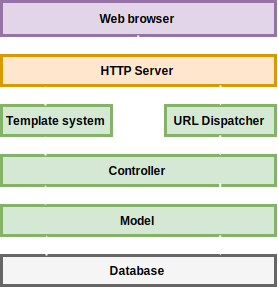
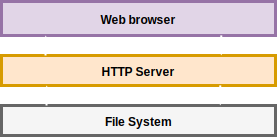

Sitic
Framework para generar páginas webs estáticas
Índice
- Introducción
- Planificación
- Descripción
- Desarrollo
- Conclusiones
- Demostración
Introducción
Contexto
- Una web se suele visitar con más frecuencia que se edita
- Cualquier web de hoy en día necesita bastantes recursos
- Si una de las partes falla, todo falla
- Seguridad en cada una de las partes
Motivación
- Noviembre 2014, miembro en desarrollo de una web completamente estática
- Se usó uno de los generadores más usados del momento
- Carencia de funcionalidades imprescindibles
- Implementar funcionalidades no 100% compatibles
Obtetivos
- Crear webs estática con funcionalidades que una web dinámica
- Permitir configurar cada uno de los aspectos
- Cualquier usuario medio puede crear un sitio web sin conocimientos
Obtetivos transversales
- Aplicar y amplicar conocimientos en desarrollo web
- Descubrir nuevas tecnologías
- Aportar software libre
Descripción
Qué es Sitic
Framework para hacer sitios web de uso general. Técnicamente hablando es un generador de sitios web estáticos.
Diferencia con generadores dinámicos
- Servidor HTTP ejecuta el generador para crear un nuevo fichero HTML por visita.
- La máquina que aloja el servidor con suficiente memoria y CPU para ejecutar el generador todo el día
- Por general, almacenan en caché los ficheros HTML
Diferencia con generadores dinámicos
- LLeva la caché a un paso más. HTML directamente en disco
- Mejora de rendimiento. Servidor HTTP muy buenos enviando ficheros
- Reduccion de costes
- Mejora en seguridad
Diferencia con generadores dinámicos

Diferencia con generadores dinámicos

Características
- Organización sencilla
- Soporte para secciones y taxonmías
- URL personalizables
- Creación dinámica de menús
- Soporte contenido esen Markdown, Textile y Reestructured text
- Soporte internacionalización
- Soporte para especificar metadatos en los contenidos
Planificación
Fases
- Fase de análisis: indentificación de las necesidades del software
- Fase de diseño: diseño de todo el sistema
- Fase de aprendizaje: familiarización con Python y bibliotecas
- Fase de desarrollo: implementación de todo lo defnido en la fase de diseño
- Pruebas y correcciones: En paralelo a la fase de desarrollo
Fase de desarrollo
- Generador básico
- Sistema de plantillas
- Internacionalización
- Amplicar funcionalidades
Diagrama de Gantt

Desarrollo
Conclusiones
Objetivos cumplidos
- Objetivos marcados al inicio se han cumplidos
- Contribución al mundo del Software libre
- Framework totalmente funcional
Valoración personal
- Siempre es un reto enfrentarse a un proyecto sólo
- Aprendizaje de nuevas herramientas y metodologías
- Puesta en prática de conocimientos adquiridos
Mejoras y ampliaciones
- Publicar un sólo idioma
- Método watch que recarga sólo el navegador
- Soporte para temas de plantillas